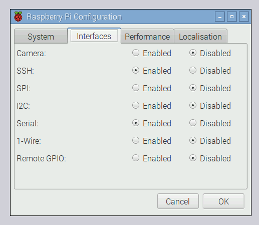
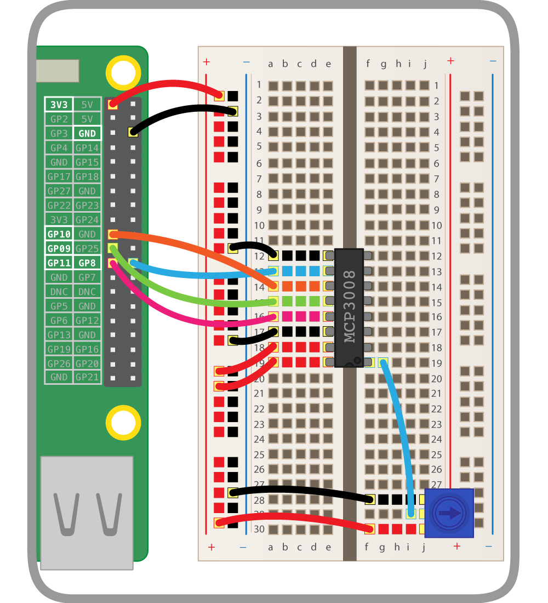

Analogue inputs
The Raspberry Pi's GPIO pins are digital pins, so you can only set outputs to high or low, or read inputs as high or low. However, using an ADC chip (Analogue-to-Digital converter), you can read the value of analogue input devices such as potentiometers.
SPI
The analogue values are communicated to the Pi using the SPI protocol. While this will work in GPIO Zero out of the box, you may get better results if you enable full SPI support.
-
Open a terminal window and install the
spidevpackage:sudo apt-get install python3-spidev python-spidev -
Open the Raspberry Pi Configuration dialogue from the main menu and enable SPI in the Interfaces tab:

-
Click OK and reboot the Pi.
Wiring the ADC (MCP3008)
The MCP3008 is an ADC providing eight input channels. The eight connectors on one side are connected to the Pi's GPIO pins, and the other eight are available to connect analogue input devices to read their values.
Place the MCP3008 chip on a breadboard and carefully wire it up as shown in the following diagram. You should see a small notch, or dot, in one end of the chip. In the diagram, this end of the chip is alligned with column 19 on the breadboard.
Alternatively, you could use the Analog Zero board, which provides the MCP3008 chip on a handy add-on board to save you from the complicated wiring.
Add a potentiometer
Now that the ADC is connected to the Pi, you can wire devices up to the input channels. A potentiometer is a good example of an analogue input device: it's simply a variable resistor, and the Pi reads the voltage (from 0V to 3.3V).
A potentiometer's pins are ground, data, and 3V3. This means you connect it to ground and a supply of 3V3, and read the actual voltage from the middle pin.
-
Place a potentiometer on the breadboard and wire one side to the ground rail, the other to the 3V3 rail, and the middle pin to the first input channel as shown:

Code
Now your potentiometer is connected and its value can be read from Python!
-
Open Python 3 from the main menu.
-
In the shell, start by importing the
MCP3008class from the GPIO Zero library:from gpiozero import MCP3008 -
Create an object representing your analogue device:
pot = MCP3008(0)Note the
0represents the ADC's channel 0. There are 8 channels (0 to 7), and you're using the first one. -
Try to read its value:
print(pot.value)You should see a number between 0 and 1. This represents how far the dial is turned.
-
Now read the value in a loop:
while True: print(pot.value)Try twisting the dial around to see the value change.
PWMLED
Now you've tested you can read values from the potentiometer, you should connect it to another GPIO device.
-
Add an LED to your breadboard and wire it to the Pi, connecting it to GPIO pin 21:

-
In your Python code, start by importing the
PWMLEDclass:from gpiozero import PWMLEDThe
PWMLEDclass lets you control the brightness of an LED using PWM, or pulse-width modulation. -
Create a
PWMLEDobject on pin 21:led = PWMLED(21) -
Test you can control the LED manually:
led.on() # the led should be lit led.off() # the led should go off led.value = 0.5 # the led should be lit at half brightness -
Now connect the LED to the potentiometer:
led.source = pot.values -
Turn the dial to change the LED brightness!
Source and values
GPIO Zero has a powerful feature: source and values. Every device has a value property (the current value) and a values property (a stream of the device's values at all times). Every output device has a source property which can be used to set what the device's value should be.
pot.valuegives the potentiometer's current value (it's read only, as it's an input device)led.valueis the LED's current value (it's read/write: you can see what it is, and you can change it)pot.valuesis a generator constantly yielding the potentiometer's current valueled.sourceis a way of setting where the LED gets its values from
Rather than continuously setting the value of the LED to the value of the potentiometer in a loop, you can just pair the two devices. Therefore the line led.source = pot.values is equivalent to the following loop:
while True:
led.value = pot.value
Multiple potentiometers
-
Add a second potentiometer to your breadboard and connect it to the ADC's channel 1:

-
Now create a second
MCP3008object on channel 1:pot2 = MCP3008(1) -
Make the LED blink:
led.blink()The LED will blink continuously, one second on and one second off.
-
Change the
on_timeandoff_timeparameters to make it blink faster or slower:led.blink(on_time=2, off_time=2) led.blink(on_time=0.5, off_time=0.1) -
Now use a loop to change the blink times according to the potentiometer values:
while True: print(pot.value, pot2.value) led.blink(on_time=pot.value, off_time=pot2.value, n=1, background=False)Note you have to make it blink once in the foreground, so that each iteration gets time to finish before it updates the blink times.
-
Rotate the dials to make it blink at different speeds!
-
Also try changing
blinktopulseand changeon_timeandoff_timetofade_in_timeandfade_out_timeso that it fades in and out at different speeds, rather than just blinking on and off:while True: print(pot.value, pot2.value) led.pulse(fade_in_time=pot.value, fade_out_time=pot2.value, n=1, background=False) -
Rotate the dials to change the effect.